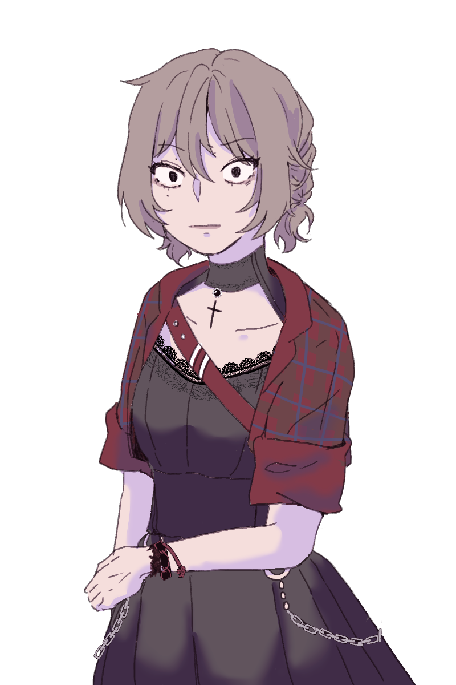

캐치 프레이즈
우주 안의 지구
한마디
“ 어쩐지 운수가 좋더니… 지대짱나. ”
외관
어깨선까지 내려오는 밀색의 곱슬머리는 양쪽으로 바짝 땋아 내리고 있다. 눈꼬리가 위로 올라가 가뜩이나 사나워 보이는 얼굴임에도 눈을 한껏 치켜뜨고 있다. 오른쪽 눈꺼풀과 눈 밑에 옅은 눈물점이 있다. 양쪽 귀와 목, 손목에는 악세사리를 주렁주렁 매달고 있으며, 소매를 걷은 재킷 안쪽으로 원피스를 입고 있다. 무릎 위를 스치는 길이의 스커트 아래로 망사 스타킹과 10cm 정도의 부츠를 신고 있다.
이름
정수미
나이
22
키/체중
165cm(굽 포함 175cm)/58kg
성격
#솔직한 #무심한 #내숭?
솔직한
정수미의 가장 큰 장점이자 가장 큰 단점 중 하나.
아무리 친근한 상대라고 해도 마음에 들지 않는 일에는 NO를 외치며, 돌려말하는 법이 없다. 좋고 싫음이 확실해서 본인의 의견이나 의도를 감추며 의뭉스럽게 구는 일 또한 드물다. 그렇다고 남의 의견을 무시하는건 아니다. 본인의 마음에 들지 않는다고 하더라도 단체생활을 할 때는 다수의 의견을 따른다. 아무래도 사회생활을 하며 학습된 부분에 가깝다는게 주변인들의 평가.
남의 눈치를 크게 보지 않는다는 점에서는 속 편한 성격인 동시에, 뭐 하나 쉽게 넘어가기 어려운 까다로운 성격이라고 할 수 있겠다. 이런 성격을 하고도 주변에 친구라고 칭할 만한 사람들이 있는 건 친밀도에 따라 이중 잣대를 적용하지 않는 한결같음 덕분이겠지.
거짓말을 하는 일도 드물다. 정확히는 거짓말을 해야 할 필요가 없는 쪽에 가까울 것이다. 어지간하면 질문에 솔직하게 대답해 주지만 워낙 인상이 사나운 탓일까? 취향이라던가 관심사 같은 사생활에 대해 물어보는 사람은 잘 없다.
엉성한
외모나 옷차림만 보고 개성 강하고 독선적인 성격일 거라는 오해를 종종 받지만… 상당히 허술한 편이다. 누군가 친절하게 대해주면 처음엔 나한테 뭐 바라는 거라도 있냐는 눈빛으로 바라보지만, 금세 마음을 열어버린다. 사기 당하기 좋은 타입인 만큼 늘 사람을 경계하려고 눈을 치켜뜨지만 조금만 얘기해보면 제법 하찮은 사람이라는 걸 깨닫게 된다. 새학기에 마이쮸 하나 건네주며 우리 친하게 지내자 하면, 금새 베스트 프렌드가 될 수 있는 난이도 0의 친구인 편.
다만, 본인이 좋아하는 것 - 특히 아이돌 - 에 한해서는 굉장히 철두철미하고 깐깐한 성격을 발휘한다. 다이어리엔 온갖 스케쥴 및 기념일에 대한 정보가 빼곡하게 적혀있으며, 그 날 본인의 행동 루틴까지 정해져 있다. 누군가는 혹시 네가 매니저인거 아니냐는 질문을 할 정도.
모든 신경을 아이돌과 관련한 곳에 쏟고 있기에, 다른 곳에 집중할 정신이 부족한 것이 평소 엉성한 행동거지의 원인일 지도 모른다.
내숭?
제법 털털한 성격이다.
어디까지나 현실에서의 모습이 그렇다는 말이다. 아무리 솔직하다고 한들, 아무리 허술하다고 한들, 누구나 남들에게는 보여주지 않는 자신만의 내면은 가지고 있는 법이다. 온라인상의 정수미, 아니 닉네임 직우(지구)는 굉장히 다정하고 예쁜말만 해 주며 귀여운 이모티콘을 남발하는 힐링 인간 그 자체라나…? 화가 나는 일이 있어도 ‘똑땅해 ㅠㅠ’ ‘기부니 별로얌’ 같은 말만 짧게 남기며, 욕을 쓰는 일도 없다. 현실에서 앞뒤 잴것 없이 솔직한 평을 남기는 것과는 대조적인 모습이기에, 인터넷에서 알게된 후 오프라인에서 만나게 된 친구들은 종종 다른사람 아닌가 하는 생각을 하기도.
소위 말하는 덕질 친구를 사귀기 위해서 부러 착하게 말하는 것도 있지만- 사실상 자기가 좋아하는 아이돌이 팬이 인터넷에 남긴 글 보고 경악할까봐 자체적으로 말을 걸러서 적는 편이다. 정수미와 직우(지구)를 전부 아는 친구가 대체 왜 온라인 상에서 내숭을 떠는거냐며 이해할 수 없다는 표정으로 질문하면 ‘순애야’라는 대답으로 일축해 버린다.
기타
대학생
4년제 대학의 미디어영상학과를 재학중이다. 수업도 과제도 꼬박꼬박 참석하고 있지만 굳이 나서서 친구를 만들지 않는 탓에 있는듯 없는듯 대학생활을 하고 있다. 이런 옅은 존재감을 십분활용하여 출튀하는 일이 잦다.
우주
고등학교 때 부터 꾸준히 좋아해온 아이돌 그룹의 멤버 중 한명. 정수미에게 우주가 누구냐고 물어보면 유일무이한 최애이자 갈라테이아의 현신이자 나만의 카미유 동시외라는 답을 들을 수 있다.
직우(지구)
정수미의 공식 팬사이트 및 온라인 전반에서 사용하는 닉네임. ‘너라는 우주 속 나라는 지구’라는 문구를 이곳 저곳에 올려놔서 다들 유래가 지구인 줄 안지만, 실제로는 오’직우’주만 에서 따온 닉네임이다.
점순이
오로지 이름이 비슷하다는 이유만으로 어릴 적 부터 있던 별명이다. 별명으로 인해 한 때는 얼굴의 점을 콤플렉스로 여겼다. 고등학교 때 우주가 출연한 라디오에 해당 내용으로 사연을 보냈다가 위로받은 후 콤플렉스를 극복했다. 덧붙여 팬사인회에서 우주가 점 위치로 자길 알아본 후 오히려 자랑스러워 하게 되었다나.
드레스코드?
평소에도 단정하기 보다는 ‘어둡다’는 반응이 오는 옷을 즐겨입는 편이다만, 지금 만큼 개성이 뚜렷한 옷을 입는건 아니다. 오늘은 무대위의 사람도 쳐다볼 정도로 강렬한 어그로를 끌고 싶었기에 부러 사람들의 시선에 띄는 옷을 입었다.
콘서트
여느 중소기업 출신 아이돌들이 그러하듯 우주가 속한 아이돌 그룹도 일년의 대부분을 해외투어로 보냈다. 반년 전 국내 콘서트를 마지막으로 오로지 해외투어만 계속해서 바짝 말라가던 정수미를 다시 살아나게 한건 우주의 입국, 그리고 국내 앙코르 콘서트의 개최 소식이었다. 당연히 금, 토, 일요일 사흘 모두 티켓을 예매했다.
운수 좋은날?
대망의 국내 앙코르 콘서트 첫날. 콘서트 당일 물판 줄을 서는 것은 아마추어나 하는 짓이라며, 사전에 온라인으로 풀어준 예약판매 제품을 전부 구매하는 데에 성공했다. 콘서트 입장 대기 중 다른 팬과 대화하다 우주의 데뷔 초 앨범 포토카드를 선물로 받았다. 어렵사리 구한 스탠딩 좌석에서 시야 확보를 위한 10cm짜리 통굽 부츠를 신고 우주의 이름과 얼굴이 새겨진 슬로건을 열렬하게 흔든 보람이 있었는지 팬서비스도 잔뜩 받았다. 특히 자유 동선 무대에서 우주가 자신을 향해 하트를 남기는 영상을 시큐리티에게 걸리지 않고 카메라에 담는 것에 성공했다.
지하철
도파민이 잔뜩 분비되어서 인지 굽 높은 부츠를 신고 내내 서있었던 것 치고는 지나치게 쌩쌩했다. sns에 콘서트 후기를 적던 중 지진이 일어났다는 소식을 접하게 된다.
직후, 재난문자를 확인하게 되며 균형을 잡지 못하고 그대로 넘어져 버리는데…
소지품
주접멘트가 적힌 슬로건, 최애의 사인 폴라로이드, 휴대폰
관계
-